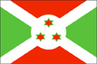
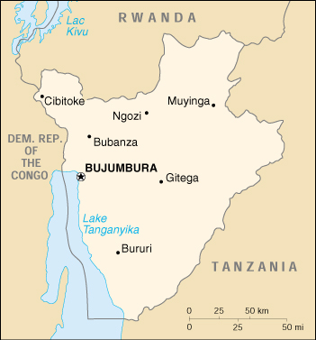

{kind=link}


| Burundi |  |
|
|  | |
| Introduction |
Background: Between 1993 and 1999, ethnic violence between Hutu and Tutsi factions in Burundi created hundreds of thousands of refugees and left at least 250,000 dead. Although many refugees have returned from neighboring countries, continued ethnic strife has forced others to flee. Burundian troops, seeking to secure their borders, have intervened in the conflict in the Democratic Republic of the Congo.
| Geography |
Location: Central Africa, east of Democratic Republic of the Congo
Geographic coordinates: 3 30 S, 30 00 E
Map references: Africa
Area:
total:
27,830 sq km
land:
25,650 sq km
water:
2,180 sq km
Area - comparative: slightly smaller than Maryland
Land boundaries:
total:
974 km
border countries:
Democratic Republic of the Congo 233 km, Rwanda 290 km, Tanzania 451 km
Coastline: 0 km (landlocked)
Maritime claims: none (landlocked)
Climate: equatorial; high plateau with considerable altitude variation (772 m to 2,670 m); average annual temperature varies with altitude from 23 to 17 degrees centigrade but is generally moderate as the average altitude is about 1,700 m; average annual rainfall is about 150 cm; wet seasons from February to May and September to November, and dry seasons from June to August and December to January
Terrain: hilly and mountainous, dropping to a plateau in east, some plains
Elevation extremes:
lowest point:
Lake Tanganyika 772 m
highest point:
Mount Heha 2,670 m
Natural resources: nickel, uranium, rare earth oxides, peat, cobalt, copper, platinum (not yet exploited), vanadium, arable land, hydropower
Land use:
arable land:
44%
permanent crops:
9%
permanent pastures:
36%
forests and woodland:
3%
other:
8% (1993 est.)
Irrigated land: 140 sq km (1993 est.)
Natural hazards: flooding, landslides
Environment - current issues: soil erosion as a result of overgrazing and the expansion of agriculture into marginal lands; deforestation (little forested land remains because of uncontrolled cutting of trees for fuel); habitat loss threatens wildlife populations
Environment - international agreements:
party to:
Biodiversity, Climate Change, Desertification, Endangered Species, Hazardous Wastes, Ozone Layer Protection
signed, but not ratified:
Law of the Sea, Nuclear Test Ban
Geography - note: landlocked; straddles crest of the Nile-Congo watershed
| People |
Population:
6,054,714
note:
estimates for this country explicitly take into account the effects of excess mortality due to AIDS; this can result in lower life expectancy, higher infant mortality and death rates, lower population and growth rates, and changes in the distribution of population by age and sex than would otherwise be expected (July 2000 est.)
Age structure:
0-14 years:
47% (male 1,442,585; female 1,411,908)
15-64 years:
50% (male 1,485,177; female 1,541,754)
65 years and over:
3% (male 71,998; female 101,292) (2000 est.)
Population growth rate: 3.15% (2000 est.)
Birth rate: 40.46 births/1,000 population (2000 est.)
Death rate: 16.44 deaths/1,000 population (2000 est.)
Net migration rate: 7.43 migrant(s)/1,000 population (2000 est.)
Sex ratio:
at birth:
1.03 male(s)/female
under 15 years:
1.02 male(s)/female
15-64 years:
0.96 male(s)/female
65 years and over:
0.71 male(s)/female
total population:
0.98 male(s)/female (2000 est.)
Infant mortality rate: 71.5 deaths/1,000 live births (2000 est.)
Life expectancy at birth:
total population:
46.18 years
male:
45.23 years
female:
47.16 years (2000 est.)
Total fertility rate: 6.25 children born/woman (2000 est.)
Nationality:
noun:
Burundian(s)
adjective:
Burundi
Ethnic groups: Hutu (Bantu) 85%, Tutsi (Hamitic) 14%, Twa (Pygmy) 1%, Europeans 3,000, South Asians 2,000
Religions: Christian 67% (Roman Catholic 62%, Protestant 5%), indigenous beliefs 23%, Muslim 10%
Languages: Kirundi (official), French (official), Swahili (along Lake Tanganyika and in the Bujumbura area)
Literacy:
definition:
age 15 and over can read and write
total population:
35.3%
male:
49.3%
female:
22.5% (1995 est.)
| Government |
Country name:
conventional long form:
Republic of Burundi
conventional short form:
Burundi
local long form:
Republika y'u Burundi
local short form:
Burundi
Data code: BY
Government type: republic
Capital: Bujumbura
Administrative divisions:
15 provinces; Bubanza, Bujumbura, Bururi, Cankuzo, Cibitoke, Gitega, Karuzi, Kayanza, Kirundo, Makamba, Muramvya, Muyinga, Ngozi, Rutana, Ruyigi
note:
there may be a new province named Mwaro
Independence: 1 July 1962 (from UN trusteeship under Belgian administration)
National holiday: Independence Day, 1 July (1962)
Constitution: 13 March 1992; provided for establishment of a plural political system; supplanted on 6 June 1998 by a Transitional Constitution which enlarged the National Assembly and created two vice presidents
Legal system: based on German and Belgian civil codes and customary law; does not accept compulsory ICJ jurisdiction
Suffrage: NA years of age; universal adult
Executive branch:
chief of state:
President Pierre BUYOYA (interim president since 27 September 1996, officially sworn in 11 June 1998), First Vice President Frederic BAMVUGINYUMVIRA (since NA May 1998), Second Vice President Mathias SINAMENYA (since NA May 1998); note - the president is both chief of state and head of government
head of government:
President Pierre BUYOYA (interim president since 27 September 1996, officially sworn in 11 June 1998), First Vice President Frederic BAMVUGINYUMVIRA (since NA May 1998), Second Vice President Mathias SINAMENYA (since NA May 1998); note - the president is both chief of state and head of government
cabinet:
Council of Ministers appointed by president
elections:
NA; current president assumed power following a coup on 25 July 1996 in which former President NTIBANTUNGANYA was overthrown
Legislative branch:
unicameral National Assembly or Assemblee Nationale (121 seats; note - new Transitional Constitution expanded the number of seats from 81 to 121 in 1998; members are elected by popular vote on a proportional basis to serve five-year terms)
elections:
last held 29 June 1993 (next was scheduled to be held in 1998, but suspended by presidential decree in 1996)
election results:
percent of vote by party - FRODEBU 71.04%, UPRONA 21.4%, other 7.56%; seats by party - FRODEBU 65, UPRONA 16, various other parties 40
Judicial branch: Supreme Court or Cour Supreme
Political parties and leaders:
Unity for National Progress or UPRONA [Luc RUKINGAMA, president]; Burundi Democratic Front or FRODEBU [Jean MINANI, president]
note:
opposition parties, legalized in March 1992, include Burundi African Alliance for the Salvation or ABASA [leader NA]; Rally for Democracy and Economic and Social Development or RADDES [Cyrille SIGEJEJE, chairman]; Party for National Redress or PARENA [Jean-Baptiste BAGAZA]; Socialist Party of Burundi or PSB [leader NA]; People's Reconciliation Party or PRP [leader NA]
Political pressure groups and leaders: Loosely organized Tutsi militias
International organization participation: ACCT, ACP, AfDB, CCC, CEEAC, CEPGL, ECA, FAO, G-77, IBRD, ICAO, ICRM, IDA, IFAD, IFC, IFRCS, ILO, IMF, Intelsat (nonsignatory user), Interpol, IOC, ITU, NAM, OAU, OPCW, UN, UNCTAD, UNESCO, UNIDO, UPU, WHO, WIPO, WMO, WToO, WTrO
Diplomatic representation in the US:
chief of mission:
Ambassador Thomas NDIKUMANA
chancery:
Suite 212, 2233 Wisconsin Avenue NW, Washington, DC 20007
telephone:
[1] (202) 342-2574
FAX:
[1] (202) 342-2578
Diplomatic representation from the US:
chief of mission:
Ambassador Mary Catlin YATES
embassy:
Avenue des Etats-Unis, Bujumbura
mailing address:
B. P. 1720, Bujumbura
telephone:
[257] (2) 223454
FAX:
[257] (2) 222926
Flag description: divided by a white diagonal cross into red panels (top and bottom) and green panels (hoist side and outer side) with a white disk superimposed at the center bearing three red six-pointed stars outlined in green arranged in a triangular design (one star above, two stars below)
| Economy |
Economy - overview: Burundi is a landlocked, resource-poor country with an underdeveloped manufacturing sector. The economy is predominantely agricultural with roughly 90% of the population dependent on subsistence agriculture. Its economic health depends on the coffee crop, which accounts for 80% of foreign exchange earnings. The ability to pay for imports therefore rests largely on the vagaries of the climate and the international coffee market. Since October 1993 the nation has suffered from massive ethnic-based violence which has resulted in the death of perhaps 250,000 persons and the displacement of about 800,000 others. Foods, medicines, and electricity remain in short supply.
GDP: purchasing power parity - $4.2 billion (1999 est.)
GDP - real growth rate: -1% (1999 est.)
GDP - per capita: purchasing power parity - $730 (1999 est.)
GDP - composition by sector:
agriculture:
46%
industry:
17%
services:
37% (1998 est.)
Population below poverty line: 36.2% (1990 est.)
Household income or consumption by percentage share:
lowest 10%:
NA%
highest 10%:
NA%
Inflation rate (consumer prices): 26% (1999 est.)
Labor force: 1.9 million
Labor force - by occupation: agriculture 93%, government 4%, industry and commerce 1.5%, services 1.5% (1983 est.)
Unemployment rate: NA%
Budget:
revenues:
$125 million
expenditures:
$176 million, including capital expenditures of $NA (2000 est.)
Industries: light consumer goods such as blankets, shoes, soap; assembly of imported components; public works construction; food processing
Industrial production growth rate: NA%
Electricity - production: 127 million kWh (1998)
Electricity - production by source:
fossil fuel:
1.57%
hydro:
98.43%
nuclear:
0%
other:
0% (1998)
Electricity - consumption: 153 million kWh (1998)
Electricity - exports: 0 kWh (1998)
Electricity - imports:
35 million kWh
note:
imports some electricity from Democratic Republic of the Congo (1998)
Agriculture - products: coffee, cotton, tea, corn, sorghum, sweet potatoes, bananas, manioc (tapioca); beef, milk, hides
Exports: $56 million (f.o.b., 1999)
Exports - commodities: coffee, tea, sugar, cotton, hides
Exports - partners: UK, Germany, Benelux, Switzerland (1998)
Imports: $108 million (f.o.b., 1999)
Imports - commodities: capital goods, petroleum products, foodstuffs
Imports - partners: Benelux, France, Zambia, Germany, Kenya, Japan (1998)
Debt - external: $1.247 billion (1997 est.)
Economic aid - recipient: $1.344 billion (1999 est.)
Currency: 1 Burundi franc (FBu) = 100 centimes
Exchange rates: Burundi francs (FBu) per US$1 - 626.79 (January 2000), 563.56 (1999), 477.77 (1998), 352.35 (1997), 302.75 (1996), 249.76 (1995)
Fiscal year: calendar year
| Communications |
Telephones - main lines in use: 17,000 (1995)
Telephones - mobile cellular: 343 (1995)
Telephone system:
primitive system
domestic:
sparse system of open wire, radiotelephone communications, and low-capacity microwave radio relay
international:
satellite earth station - 1 Intelsat (Indian Ocean)
Radio broadcast stations: AM 2, FM 2, shortwave 0 (1998)
Radios: 440,000 (1997)
Television broadcast stations: 1 (1999)
Televisions: 25,000 (1997)
Internet Service Providers (ISPs): NA
| Transportation |
Railways: 0 km
Highways:
total:
14,480 km
paved:
1,028 km
unpaved:
13,452 km (1996 est.)
Waterways: Lake Tanganyika
Ports and harbors: Bujumbura
Airports: 4 (1999 est.)
Airports - with paved runways:
total:
1
over 3,047 m:
1 (1999 est.)
Airports - with unpaved runways:
total:
3
914 to 1,523 m:
2
under 914 m:
1 (1999 est.)
| Military |
Military branches: Army (includes naval and air units), paramilitary Gendarmerie
Military manpower - military age: 16 years of age
Military manpower - availability:
males age 15-49:
1,344,177 (2000 est.)
Military manpower - fit for military service:
males age 15-49:
701,367 (2000 est.)
Military manpower - reaching military age annually:
males:
76,866 (2000 est.)
Military expenditures - dollar figure: $25 million (FY93)
Military expenditures - percent of GDP: 2.6% (FY93)
| Transnational Issues |
Disputes - international: none